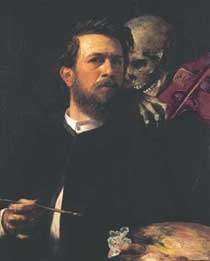
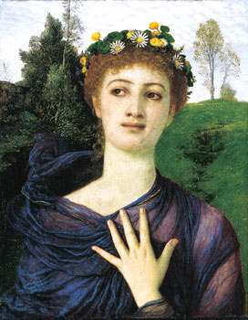
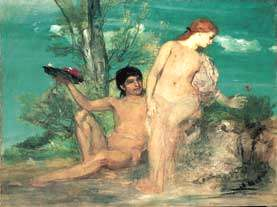
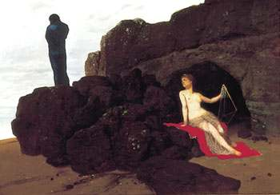
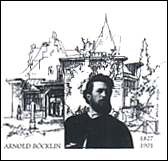
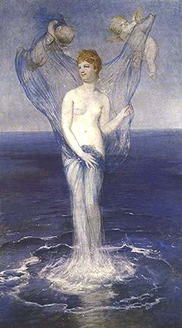
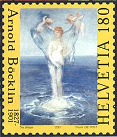
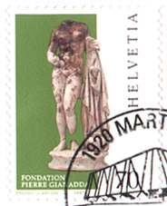

Copyright © 2001 by Victor Manta, Switzerland.
All rights reserved worldwide.

Click the banner above to visit
the site
Arnold Böcklin
Centenary of the Death
Arnold Böcklin was born in Basle on 16 October 1827, the son of
a textile merchant, and went on to became one of Switzerland's major
19th century artist. This year marked the centenary of his death, on
16 January 2001. After Training at the Basle Municipal School of Art
and Düsseldorf Academy of Art, Böcklin went on a study trip
through the Alps, from the Grisons to the Lake Geneva, in 1847. In
1848 he was in Paris where he was caught up by the confusion of the
February Revolution.
Tip: Point to images with the mouse for more
information.
 |
 |
1850 to 1857 were spent in Rome, and it was in the mid-1850 that the first mythological figures featured in his Roman landscapes. He was in Basle in 1857-1858 before to moving on to Hanover and Munich. Between 1860 and 1862 he was professor of landscape painting at the Weimar Academy of Art. He returned to Rome between 1852 and 1866, worked on frescoes in Basle between 1866 and 1871, moved to Munich for three years before settling in Florence until 1855. From there he went to Zurich, where he stayed until 1892, striking a friendship with the author Gottfried Keller. Finally he moved back to Florence and died in San Domenico, Italy on 16 January 1901.
 |
 |
Increasingly blending atmospheric landscapes and allegorically generalized figures, Böcklin emerged as one of the leading Symbolists of the German-speaking world and a formative influence on Jugendstil. As a result of the imaginative idiosyncrasy, openness and evocative power of his visions, his work generated everything from criticism and distortion to fanatical admiration, and left its mark on generations to come. Böcklin wanted viewers to be «gripped» by the subject matter and emotional intensity of his canvases. A hundred years after his death, many of his paintings continue to fulfil that hope.
 |
 |
 |
The Swiss postal administration will issue a stamp commemorating Arnold's Böcklin death centenary. The issuing date is 20th of September 2001. The stamp was designed by Trix Wetter from Zürich. It is printed in offset, 4-colours by Swiss post Stamp Printers, Berne. The stamp reproduces the painting: The Birth of Venus (oil on canvas), 1869, 135.5 x 79 cm.
Comment
Please notice that we, the stamp collectors, haven't got the possibility to cancel this stamp on 16 January 2001, the day of painter's death centenary. The reason is that this stamp wasn't in the program of the postal administration, and actually replaces a stamp dedicated to A. Giacometti, stamp that couldn't be issued due to some obscure copyright problems.

It is also interesting to observe the evolution of nude art on Swiss stamps. The first nude reproduction was a stamp from the Gaelic-Roman Art set of 1997, Venus of Octodurus (shown above, Sc. 991). The Böcklin stamp is an evidence of a certain evolution, for sure... For other Nude paintings on this site please click here.
The Arnold Bröcklin retrospective is opened at the Kunstmuseum Basel between May 15 and August 26, 2001. It offers a representative selection of 90 pictures from major public and private collections, tracing Böcklin’s development from Late Romanticism to Symbolism. Click here for more information about this exhibition.
| Published:
08/04/2001. Revised: 01/16/02. Copyright © 2001 by Victor Manta, Switzerland. All rights reserved worldwide. |
|